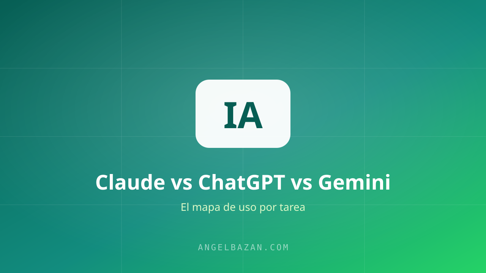

Claude vs ChatGPT vs Gemini: cuál usar en tus funnels y en WhatsApp
Claude, ChatGPT o Gemini: la pregunta no es cuál es la mejor IA, sino cuál usar en cada proceso de tu negocio. Te comparto mi mapa de uso por tarea.
En este artículo
Una de las preguntas que más recibo es: "¿cuál es la mejor IA, Claude, ChatGPT o Gemini?" Y mi respuesta siempre decepciona un poco: ninguna es la mejor — cada una es mejor para algo. Lo que sí existe es un mapa de uso por tarea, y ese mapa es el que te cambia el día a día de tu negocio.

La mentalidad: herramientas, no religiones
En mi negocio uso las tres a la semana, y cada una en tareas distintas. Elegir "la mejor" en abstracto es como preguntar cuál es la mejor herramienta: ¿el martillo o la sierra? Depende de lo que vayas a hacer.
Claude: el escritor y analista
Mi favorita para escritura larga y razonamiento: páginas de ventas, guiones de VSL, análisis de documentos, estructuras de funnel completas. Su tono natural y su capacidad de seguir instrucciones complejas lo hacen ideal para el copy de alto nivel.
ChatGPT: el todoterreno
El que más uso para tareas rápidas y variadas: lluvias de ideas, titulares, respuestas rápidas, armar el guion del bot. Tiene el mejor equilibrio entre velocidad, conocimiento y ecosistema (GPTs, integraciones).
Gemini: el integrado con Google
Lo uso dentro del ecosistema Google: resumir correos en Gmail, analizar hojas de cálculo, investigar con el buscador. No es mi primera opción para copy, pero es insuperable en productividad integrada.
Mi mapa por tarea en funnels y WhatsApp
- Página de ventas o VSL completo: Claude.
- Anuncios de Meta Ads (10 variantes): ChatGPT o Gemini por volumen.
- Análisis de anuncios de la competencia: Claude o ChatGPT (mira cómo uso IA para espiar anuncios).
- Investigación de mercado con fuentes: Gemini por su acceso al buscador.
- Guiones del bot de WhatsApp: Claude para la estructura + ChatGPT para variaciones.
Cuál usar en tu bot de WhatsApp con IA
Si montas un asistente de IA en WhatsApp, la elección del modelo importa poco frente al sistema: instrucciones claras, base de conocimiento con tu oferta y límites de derivación a humano. Cualquiera de los tres sirve bien; yo suelo arrancar con el modelo que ya tengo contratado y migro si el costo por mensaje o la calidad del español lo justifican.
Cuidado con un detalle: verifica siempre que el bot no invente datos de tu producto. Cómo evitarlo lo explico en por qué la IA inventa información.
Consejos prácticos para probar los tres modelos
En vez de elegir "el mejor" de una vez, prueba los tres con la misma tarea durante una semana y decide con evidencia. La forma de hacerlo bien:
- La misma tarea, el mismo prompt: pídeles lo mismo (una página de ventas, un guion de VSL, un análisis de anuncios) y compara tono, estructura y errores.
- Mide tiempo y calidad, no opiniones: cronometra cuánto te toma llegar al resultado usable y cuánto editaste después. Ese es el dato real.
- No mezcles cuentas: si trabajas en equipo, estandariza dónde queda cada tipo de trabajo para no perder contexto entre chats.
- Guarda los prompts que funcionan: un prompt bien armado vale más que el modelo que lo ejecuta. Reúne los tuyos en la guía de prompts de marketing.
Para copy comercial largo (páginas y VSL), prueba Claude; para volumen de anuncios, ChatGPT o Gemini; para análisis con fuentes, Gemini. Y cuando el resultado es espiar a la competencia, el flujo completo está en cómo usar ChatGPT para marketing. Evalúa también el analizador de copy de la competencia antes de decidir por una sola herramienta.
Un buen hábito es tener una carpeta de pruebas: guarda el prompt, la respuesta de cada modelo y tu veredicto. A las tres semanas ya no estarás eligiendo por fama ni por moda, sino con tu propio historial de resultados. Y no olvides que el modelo es la punta del iceberg: la mayor parte de la calidad viene de cómo defines el contexto y de qué tan bien curas lo que te devuelve. Incluso el mejor modelo del mercado produce basura si le das un prompt vago y sin información de tu negocio.
Preguntas frecuentes
¿Puedo usar un solo modelo para todo el negocio?
Sí, y es lo que recomiendo al empezar. La diferencia entre modelos se nota en tareas largas y complejas, no en el día a día. Elige uno, domínalo y agrega otro solo cuando una tarea específica lo justifique.
¿La versión gratis alcanza para marketing?
Para copy y análisis, sí, con límites de uso. Para automatizaciones y bots de WhatsApp que procesan muchas conversaciones, el plan de pago se justifica por volumen.
¿Cuál es el mejor para escribir en español?
Los tres escriben bien en español; la diferencia está en el estilo. Prueba la misma página de ventas en cada uno y quédate con el que más se acerque a tu voz.

Angel Bazán
Especialista en funnels, Meta Ads y WhatsApp + IA. Ayudo a negocios a vender más combinando tráfico pagado con conversaciones automatizadas.
Conoce más sobre mí →Aprende a crear y vender productos digitales con Meta Ads, WhatsApp e IA
Clases en vivo, estrategias y recursos para construir tu sistema desde cero. 🚀
Únete gratis al grupo